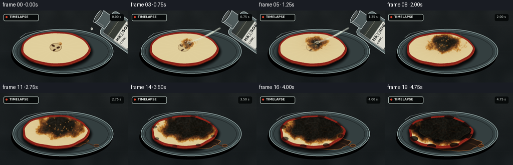
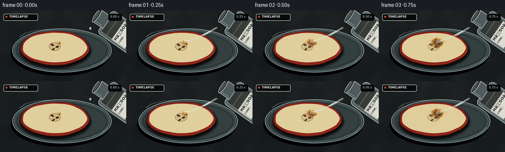

CODING AGENTS AS PIXEL WORLD MODELS
traex/GPT-5.6-Sol · phygen_152
点击播放 · 原生 RGB 像素
逐轮保存的候选
回放视频、检查图与代码变化。
每份候选均可单独播放。实际图片检查记录在下方工具轨迹中。
候选 01播放与检查图
点击播放 · 原生 RGB 像素


展开代码变化
--- 上一保存版本
+++ 本次保存版本
@@ -0,0 +1,364 @@
+from pathlib import Path
+import math
+import numpy as np
+from PIL import Image, ImageDraw, ImageFont, ImageFilter
+import artifact_io
+
+W, H, N, S = 256, 144, 20, 4
+SW, SH = W*S, H*S
+ROOT = Path(__file__).resolve().parent
+rng = np.random.default_rng(152)
+
+
+def font(size, bold=False):
+ path = '/usr/share/fonts/truetype/dejavu/DejaVuSans-Bold.ttf' if bold else '/usr/share/fonts/truetype/dejavu/DejaVuSans.ttf'
+ return ImageFont.truetype(path, size*S)
+
+
+def pts_scaled(points):
+ return [(int(x*S), int(y*S)) for x, y in points]
+
+
+def ellipse(draw, box, **kwargs):
+ if 'width' in kwargs: kwargs['width'] = max(1, int(kwargs['width']))
+ draw.ellipse(tuple(int(v*S) for v in box), **kwargs)
+
+
+def line(draw, points, **kwargs):
+ if 'width' in kwargs: kwargs['width'] = max(1, int(kwargs['width']*S))
+ draw.line(pts_scaled(points), **kwargs)
+
+
+def irregular_ellipse(cx, cy, rx, ry, phase=0, n=120, rough=0.02):
+ out=[]
+ for k in range(n):
+ a=2*math.pi*k/n
+ rr=1 + rough*(math.sin(5*a+phase)+0.45*math.sin(11*a+phase*1.7))
+ # mild perspective/organic asymmetry
+ out.append((cx+rx*rr*math.cos(a), cy+ry*rr*math.sin(a)))
+ return out
+
+
+def smooth_noise(h, w, seed, scale=18):
+ r=np.random.default_rng(seed)
+ hh=max(2,h//scale); ww=max(2,w//scale)
+ a=(r.random((hh,ww))*255).astype(np.uint8)
+ im=Image.fromarray(a).resize((w,h),Image.Resampling.BICUBIC).filter(ImageFilter.GaussianBlur(scale/3))
+ return np.asarray(im,dtype=np.float32)/255
+
+# fixed photographic surface texture
+Y, X=np.mgrid[0:SH,0:SW]
+base=np.zeros((SH,SW,3),dtype=np.float32)
+grad=(1-Y/SH)*5 + (X/SW)*2
+base[...,0]=22+grad
+base[...,1]=27+grad*0.85
+base[...,2]=29+grad*0.7
+fine=rng.normal(0,1.7,(SH,SW,1))
+low=(smooth_noise(SH,SW,91,70)-.5)[...,None]*9
+base=np.clip(base+fine+low,0,255)
+# subtle slate veins
+for yy in [28,118,327,469]:
+ if yy<SH:
+ base[max(0,yy-1):yy+2,:, :] += 2
+BACKGROUND=Image.fromarray(np.uint8(np.clip(base,0,255)),'RGB')
+
+# fixed reaction-front texture at supersampled resolution
+front_noise=(smooth_noise(SH,SW,771,32)-.5)*2
+micro=(smooth_noise(SH,SW,772,7)-.5)*2
+
+
+def add_plate(im):
+ d=ImageDraw.Draw(im,'RGBA')
+ ellipse(d,(22,43,224,133),fill=(0,0,0,68))
+ ellipse(d,(25,37,226,126),fill=(52,63,64,30),outline=(173,196,194,95),width=1*S)
+ ellipse(d,(29,40,222,123),outline=(92,111,112,110),width=1*S)
+ # rim highlights and reflected streaks
+ line(d,[(40,54),(51,46),(75,40),(105,38)],fill=(225,241,236,105),width=.7)
+ line(d,[(186,113),(207,105),(218,94)],fill=(194,219,215,70),width=.65)
+ ellipse(d,(34,45,216,119),outline=(10,14,15,80),width=.7*S)
+
+
+def add_runoff(im,p):
+ if p < .26: return
+ q=(p-.26)/.74
+ layer=Image.new('RGBA',(SW,SH),(0,0,0,0)); d=ImageDraw.Draw(layer,'RGBA')
+ cx,cy=132+9*q,92+9*q; rx=25+25*q; ry=7+8*q
+ poly=irregular_ellipse(cx,cy,rx,ry,2.1,100,.055)
+ col=(99,50,20,int(36+90*q)) if q<.65 else (35,21,14,int(75+90*q))
+ d.polygon(pts_scaled(poly),fill=col)
+ # glassy edge and a thin trickle to the right
+ d.line(pts_scaled(poly+[poly[0]]),fill=(185,104,45,int(65+45*q)),width=max(1,S))
+ if q>.42:
+ line(d,[(156,96),(176,99+3*q),(192,105+4*q)],fill=(65,31,13,int(80*q)),width=2.0)
+ ellipse(d,(187,102,198,108),fill=(57,29,14,int(95*q)),outline=(172,91,36,int(75*q)),width=S)
+ im.alpha_composite(layer)
+
+
+def apple_masks(p):
+ # the slice contracts and puckers during dehydration
+ shrink=0.075*(p**1.7)
+ cx,cy=111,76
+ rx=69*(1-shrink); ry=34*(1-.055*p**1.6)
+ outer=irregular_ellipse(cx,cy+1.5*p,rx,ry,0.5+p*1.2,180,.012+.016*p*p)
+ inner=irregular_ellipse(cx,cy-.5+1.5*p,rx-4.0,ry-4.0,0.9+p,180,.010+.019*p*p)
+ om=Image.new('L',(SW,SH),0); ImageDraw.Draw(om).polygon(pts_scaled(outer),fill=255)
+ inn=Image.new('L',(SW,SH),0); ImageDraw.Draw(inn).polygon(pts_scaled(inner),fill=255)
+ return outer,inner,om,inn
+
+
+def draw_rotated_almond(layer,xy,size,angle,fill,outline=None):
+ w,h=size
+ patch=Image.new('RGBA',(int((w+8)*S),int((h+8)*S)),(0,0,0,0)); pd=ImageDraw.Draw(patch,'RGBA')
+ pd.ellipse((4*S,4*S,(4+w)*S,(4+h)*S),fill=fill,outline=outline,width=max(1,S))
+ patch=patch.rotate(angle,Image.Resampling.BICUBIC,expand=True)
+ layer.alpha_composite(patch,(int((xy[0]-patch.width/S/2)*S),int((xy[1]-patch.height/S/2)*S)))
+
+
+def add_apple(im,p,frame):
+ outer,inner,om,inn=apple_masks(p)
+ # cast shadow below the fruit
+ shadow=Image.new('RGBA',(SW,SH),(0,0,0,0)); sd=ImageDraw.Draw(shadow)
+ sd.polygon(pts_scaled([(x+1,y+5) for x,y in outer]),fill=(0,0,0,150))
+ shadow=shadow.filter(ImageFilter.GaussianBlur(3*S)); im.alpha_composite(shadow)
+
+ layer=Image.new('RGBA',(SW,SH),(0,0,0,0)); d=ImageDraw.Draw(layer,'RGBA')
+ # red peel and its lower edge
+ d.polygon(pts_scaled([(x,y+2.2) for x,y in outer]),fill=(77,18,15,255))
+ d.polygon(pts_scaled(outer),fill=(142,34,25,255))
+ # mottled peel highlights
+ line(d,outer[5:65],fill=(220,76,43,180),width=1.2)
+ line(d,outer[80:145],fill=(91,18,16,170),width=1.1)
+ d.polygon(pts_scaled(inner),fill=(224,205,153,255))
+ im.alpha_composite(layer)
+
+ # cream flesh, fiber variation and reaction computed as a textured field
+ mask=np.asarray(inn,dtype=np.float32)/255
+ yy,xx=np.mgrid[0:SH,0:SW]
+ # base flesh shading, warmer toward lower edge
+ flesh=np.zeros((SH,SW,4),dtype=np.float32)
+ fiber=(micro*.55+front_noise*.25)
+ flesh[...,0]=224+7*fiber-(yy/S-75)*.10
+ flesh[...,1]=207+6*fiber-(yy/S-75)*.15
+ flesh[...,2]=157+7*fiber-(yy/S-75)*.20
+ flesh[...,3]=mask*255
+
+ # acid reaction front begins at the impact point and spreads irregularly
+ dx=(xx/S-121)/(67*(1-.05*p)); dy=(yy/S-66)/(36*(1-.03*p))
+ dist=np.sqrt(dx*dx+dy*dy)
+ front=max(0,p)*1.18
+ sev=np.clip((front-dist+0.16*front_noise+0.055*micro)/0.34,0,1)*mask
+ # concentrated center blackens faster
+ sev=np.clip(sev + np.clip(p-.18,0,1)*np.exp(-dist*3.2)*.55,0,1)*mask
+ keys=np.array([[224,207,157],[196,133,53],[104,53,23],[48,27,16],[9,9,8]],dtype=float)
+ stops=np.array([0,.23,.50,.75,1.0])
+ rgb=np.empty((SH,SW,3),dtype=np.float32)
+ for c in range(3): rgb[...,c]=np.interp(sev.ravel(),stops,keys[:,c]).reshape(SH,SW)
+ # scorched material has coarse uneven soot
+ rgb += ((micro*8 + front_noise*5)*np.clip((sev-.35)*1.6,0,1))[...,None]
+ flesh[...,:3]=rgb
+ flesh=np.uint8(np.clip(flesh,0,255))
+ im.alpha_composite(Image.fromarray(flesh,'RGBA'))
+
+ details=Image.new('RGBA',(SW,SH),(0,0,0,0)); dd=ImageDraw.Draw(details,'RGBA')
+ # pale radial pulp fibers, disappearing under the reaction
+ for k in range(22):
+ a=2*math.pi*k/22+.12
+ r1=13; r2=53+5*math.sin(k*2.1)
+ x1=111+math.cos(a)*r1; y1=75+math.sin(a)*r1*.52
+ x2=111+math.cos(a)*r2; y2=75+math.sin(a)*r2*.52
+ local_d=math.hypot((x2-121)/67,(y2-66)/36)
+ vis=int(52*(1-np.clip((front-local_d+.1)/.4,0,1)))
+ line(dd,[(x1,y1),(x2,y2)],fill=(255,242,198,vis),width=.45)
+ # core cavity and seeds; fade into blackened pulp but remain legible at first
+ core_alpha=int(205*(1-min(1,p*1.45)))
+ ellipse(dd,(99,65,123,82),fill=(179,146,96,core_alpha//2),outline=(133,98,58,core_alpha),width=S)
+ im.alpha_composite(details)
+ seeds=Image.new('RGBA',(SW,SH),(0,0,0,0))
+ sa=max(35,int(245*(1-min(.9,p*1.15))))
+ draw_rotated_almond(seeds,(106,70),(7,3.5),-25,(73,38,20,sa),(45,25,17,sa))
+ draw_rotated_almond(seeds,(116,74),(7,3.5),18,(70,35,18,sa),(43,23,15,sa))
+ draw_rotated_almond(seeds,(108,79),(6.5,3.2),38,(78,40,19,sa),(44,23,14,sa))
+ im.alpha_composite(seeds)
+
+ # wet acid sheen over reacting area
+ if p>0:
+ wet=Image.new('RGBA',(SW,SH),(0,0,0,0)); wd=ImageDraw.Draw(wet,'RGBA')
+ wrx=5+48*min(1,p*1.13); wry=2.5+25*min(1,p*1.13)
+ wetpoly=irregular_ellipse(121,67,wrx,wry,1.5,120,.045)
+ wd.polygon(pts_scaled(wetpoly),fill=(250,218,146,int(12+18*(1-p))))
+ wd.line(pts_scaled(wetpoly+[wetpoly[0]]),fill=(250,185,86,int(55*(1-.45*p))),width=max(1,S))
+ # several curved specular glints on viscous liquid
+ line(wd,[(96,58+5*p),(108,54+5*p),(120,55+5*p)],fill=(255,244,204,int(90*(1-p*.5))),width=.65)
+ line(wd,[(129,75),(143,78),(151,77)],fill=(238,165,77,int(72*p)),width=.55)
+ # clip wet layer to fruit
+ wet.putalpha(Image.composite(wet.getchannel('A'),Image.new('L',(SW,SH),0),inn))
+ im.alpha_composite(wet)
+
+ # gas bubbles and porous char holes
+ bubbles=Image.new('RGBA',(SW,SH),(0,0,0,0)); bd=ImageDraw.Draw(bubbles,'RGBA')
+ brng=np.random.default_rng(3100+frame)
+ count=int(3+20*np.sin(math.pi*min(1,p))**1.2+10*p)
+ for k in range(count):
+ a=brng.uniform(0,2*math.pi); rr=brng.uniform(.05,1)**.6
+ bx=121+math.cos(a)*rr*(49*min(1,p*1.3)); by=67+math.sin(a)*rr*(25*min(1,p*1.3))
+ # only bubbles on the actual fruit
+ ix=min(SW-1,max(0,int(bx*S))); iy=min(SH-1,max(0,int(by*S)))
+ if mask[iy,ix]<.5: continue
+ r=brng.uniform(.6,2.0)*(1-.25*p)
+ if p<.68:
+ ellipse(bd,(bx-r,by-r,bx+r,by+r),fill=(109,57,21,165),outline=(245,166,69,175),width=.45*S)
+ ellipse(bd,(bx-r*.45,by-r*.72,bx+r*.1,by-r*.18),fill=(255,230,167,150))
+ else:
+ ellipse(bd,(bx-r,by-r*.72,bx+r,by+r*.72),fill=(4,5,4,190),outline=(83,47,24,150),width=.4*S)
+ im.alpha_composite(bubbles)
+
+ # puckering cracks and folds become obvious late in the timelapse
+ if p>.32:
+ folds=Image.new('RGBA',(SW,SH),(0,0,0,0)); fd=ImageDraw.Draw(folds,'RGBA')
+ q=(p-.32)/.68
+ for k in range(15):
+ a=2*math.pi*k/15 + .22*math.sin(k)
+ r0=9+4*math.sin(k*1.4); r1=26+25*q+4*math.cos(k)
+ points=[]
+ for j in range(12):
+ r=r0+(r1-r0)*j/11
+ aa=a+.05*math.sin(j*.8+k)
+ points.append((118+math.cos(aa)*r,69+math.sin(aa)*r*.56))
+ line(fd,points,fill=(21,12,8,int(45+105*q)),width=.45+q*.35)
+ if k%3==0:
+ line(fd,[(x,y-0.7) for x,y in points],fill=(181,94,34,int(28+30*q)),width=.35)
+ folds.putalpha(Image.composite(folds.getchannel('A'),Image.new('L',(SW,SH),0),inn))
+ im.alpha_composite(folds)
+
+ # late char creeps over portions of the red peel
+ if p>.72:
+ q=(p-.72)/.28
+ char=Image.new('RGBA',(SW,SH),(0,0,0,0)); cd=ImageDraw.Draw(char,'RGBA')
+ for k in range(8):
+ a=(k/8)*2*math.pi+.3
+ x=111+math.cos(a)*65*(1-.07*p); y=77+math.sin(a)*31
+ r=2+6*q*(.5+.5*math.sin(k*3.2)**2)
+ ellipse(cd,(x-r*1.8,y-r,x+r*1.8,y+r),fill=(10,9,7,int(100+110*q)))
+ char.putalpha(Image.composite(char.getchannel('A'),Image.new('L',(SW,SH),0),om))
+ im.alpha_composite(char)
+
+
+def add_steam(im,p,frame):
+ if p<.16: return
+ q=np.clip((p-.16)/.52,0,1)
+ # steam peaks mid-reaction and remains faint at the end
+ alpha=(0.35+0.65*math.sin(math.pi*min(.9,p))) * q
+ st=Image.new('RGBA',(SW,SH),(0,0,0,0)); sd=ImageDraw.Draw(st,'RGBA')
+ for k in range(5):
+ x0=91+k*14 + 2*math.sin(frame*.7+k)
+ y0=63+4*math.cos(k)
+ height=20+8*math.sin(k*1.7+frame*.2)**2
+ points=[]
+ for j in range(25):
+ u=j/24
+ x=x0+4*math.sin(u*math.pi*2+k+frame*.12)+u*(k-2)*1.2
+ y=y0-height*u
+ points.append((x,y))
+ line(sd,points,fill=(222,231,224,int(48*alpha)),width=1.4)
+ line(sd,[(x+1.4,y) for x,y in points],fill=(255,255,248,int(20*alpha)),width=.7)
+ st=st.filter(ImageFilter.GaussianBlur(1.7*S))
+ im.alpha_composite(st)
+
+
+def make_bottle():
+ # Draw upright, then rotate so the open neck points down-left toward the sample.
+ bw,bh=72,112
+ b=Image.new('RGBA',(bw*S,bh*S),(0,0,0,0)); d=ImageDraw.Draw(b,'RGBA')
+ # glass body with transparent acid
+ d.rounded_rectangle((8*S,25*S,64*S,110*S),radius=8*S,fill=(183,210,210,105),outline=(235,250,247,210),width=S)
+ d.rounded_rectangle((13*S,31*S,59*S,105*S),radius=6*S,fill=(219,231,215,32))
+ d.rectangle((21*S,5*S,51*S,31*S),fill=(184,211,211,85),outline=(237,249,247,205),width=S)
+ d.ellipse((20*S,1*S,52*S,10*S),fill=(35,45,45,150),outline=(244,255,252,235),width=S)
+ d.ellipse((24*S,3*S,48*S,7*S),fill=(217,225,210,70))
+ # acid level
+ d.rounded_rectangle((13*S,40*S,59*S,105*S),radius=5*S,fill=(216,220,173,38))
+ d.line((15*S,44*S,57*S,44*S),fill=(252,251,220,105),width=S)
+ # paper label
+ d.rounded_rectangle((12*S,57*S,60*S,91*S),radius=2*S,fill=(236,235,224,238),outline=(122,130,124,220),width=S)
+ d.text((16*S,59*S),'HâSOâ',font=font(8,True),fill=(27,30,29,255))
+ d.text((16*S,71*S),'CONC.',font=font(5,True),fill=(50,50,46,255))
+ # hazard diamond
+ dia=[(51,73),(57,79),(51,85),(45,79)]
+ d.polygon(pts_scaled(dia),fill=(244,245,235,255),outline=(191,35,30,255))
+ d.text((49*S,74*S),'!',font=font(5,True),fill=(20,20,18,255))
+ # strong edge highlights
+ d.line((14*S,32*S,14*S,101*S),fill=(255,255,255,150),width=S)
+ d.line((25*S,7*S,25*S,26*S),fill=(255,255,255,135),width=S)
+ return b.rotate(55,Image.Resampling.BICUBIC,expand=True)
+
+BOTTLE=make_bottle()
+
+
+def add_pour(im,frame,p):
+ # Bottle withdraws after the pour; the acid is transparent but strongly highlighted.
+ if frame<=7:
+ pour=Image.new('RGBA',(SW,SH),(0,0,0,0)); d=ImageDraw.Draw(pour,'RGBA')
+ if frame>=1 and frame<=6:
+ strength=1 if frame<5 else (7-frame)/2
+ # viscous, slightly curved continuous stream
+ path=[]
+ for j in range(30):
+ u=j/29
+ x=184*(1-u)+121*u + 3*math.sin(math.pi*u)*u
+ y=35*(1-u)+64*u + 2*math.sin(math.pi*u)
+ path.append((x,y))
+ line(d,path,fill=(210,220,201,int(110*strength)),width=4.0)
+ line(d,[(x-0.6,y) for x,y in path],fill=(255,255,238,int(205*strength)),width=.85)
+ line(d,[(x+1.3,y+.2) for x,y in path],fill=(132,153,146,int(70*strength)),width=.65)
+ # impact crown / splash droplets
+ ellipse(d,(117,61,126,66),fill=(236,232,187,int(90*strength)),outline=(255,250,221,int(170*strength)),width=S)
+ for k in range(4):
+ ang=.5+k*1.2+frame*.17; rr=5+k
+ x=121+math.cos(ang)*rr; y=63+math.sin(ang)*rr*.5
+ ellipse(d,(x-.7,y-.7,x+.7,y+.7),fill=(252,246,216,int(160*strength)))
+ elif frame==0:
+ # first suspended drop at the lip
+ ellipse(d,(181,34,185,39),fill=(237,242,220,150),outline=(255,255,245,210),width=S)
+ elif frame==7:
+ # final broken droplets
+ for x,y,r in [(173,39,1.3),(158,46,1.1),(143,53,.9)]:
+ ellipse(d,(x-r,y-r,x+r,y+r),fill=(240,244,224,150),outline=(255,255,246,190),width=S)
+ im.alpha_composite(pour)
+ # opening location is kept near (184,35), body extends to the top right
+ withdraw=max(0,frame-5)
+ bx=int((171+withdraw*5)*S); by=int((-22-withdraw*4)*S)
+ im.alpha_composite(BOTTLE,(bx,by))
+
+
+def add_overlay(im,frame):
+ d=ImageDraw.Draw(im,'RGBA')
+ # restrained documentary timelapse indicator
+ d.rounded_rectangle((7*S,7*S,77*S,21*S),radius=3*S,fill=(7,10,10,142),outline=(182,196,190,45),width=S)
+ ellipse(d,(11,11,15,15),fill=(216,66,43,235))
+ d.text((19*S,9*S),'TIMELAPSE',font=font(6,True),fill=(229,234,229,235))
+ timestamp=f'{frame/4:04.2f} s'
+ # right aligned tiny timestamp
+ box=d.textbbox((0,0),timestamp,font=font(6,False)); tw=box[2]-box[0]
+ d.rounded_rectangle(((238*S-tw),7*S,247*S,21*S),radius=3*S,fill=(7,10,10,125))
+ d.text((242*S-tw,9*S),timestamp,font=font(6,False),fill=(218,226,221,225))
+
+
+def render(frame):
+ p=np.clip((frame-.5)/18.0,0,1)**.82
+ im=BACKGROUND.convert('RGBA')
+ add_plate(im)
+ add_runoff(im,p)
+ add_apple(im,p,frame)
+ add_steam(im,p,frame)
+ add_pour(im,frame,p)
+ add_overlay(im,frame)
+ out=im.convert('RGB').resize((W,H),Image.Resampling.LANCZOS)
+ return np.asarray(out,dtype=np.uint8)
+
+
+def main():
+ frames=np.stack([render(i) for i in range(N)],axis=0)
+ artifact_io.save(frames,ROOT)
+
+if __name__=='__main__':
+ main()
可观测工具轨迹
实际执行的命令与返回图片。
命令 1exit 0
/bin/bash -lc "cat prompt.txt && printf '\\n---RULES---\\n' && cat GENERATION_RULES.md && printf '\\n---SPEC---\\n' && cat task_spec.json"
命令 2exit 0
/bin/bash -lc "find . -maxdepth 2 -type f -printf '%p\\n' | sort"
命令 3exit 0
/bin/bash -lc "sed -n '1,240p' artifact_io.py"
命令 4exit 0
/bin/bash -lc "python - <<'PY'
import PIL, numpy
print('PIL',PIL.__version__,'numpy',numpy.__version__)
PY"命令 5exit 2
/bin/bash -lc "cat > generate.py <<'PY'
from pathlib import Path
import math
import numpy as np
from PIL import Image, ImageDraw, ImageFont, ImageFilter
import artifact_io
W, H, N, S = 256, 144, 20, 4
SW, SH = W*S, H*S
ROOT = Path(__file__).resolve().parent
rng = np.random.default_rng(152)
def font(size, bold=False):
path = '/usr/share/fonts/truetype/dejavu/DejaVuSans-Bold.ttf' if bold else '/usr/share/fonts/truetype/dejavu/DejaVuSans.ttf'
return ImageFont.truetype(path, size*S)
def pts_scaled(points):
return [(int(x*S), int(y*S)) for x, y in points]
def ellipse(draw, box, **kwargs):
draw.ellipse(tuple(int(v*S) for v in box), **kwargs)
def line(draw, points, **kwargs):
if 'width' in kwargs: kwargs['width'] = max(1, int(kwargs['width']*S))
draw.line(pts_scaled(points), **kwargs)
def irregular_ellipse(cx, cy, rx, ry, phase=0, n=120, rough=0.02):
out=[]
for k in range(n):
a=2*math.pi*k/n
rr=1 + rough*(math.sin(5*a+phase)+0.45*math.sin(11*a+phase*1.7))
# mild perspective/organic asymmetry
out.append((cx+rx*rr*math.cos(a), cy+ry*rr*math.sin(a)))
return out
def smooth_noise(h, w, seed, scale=18):
r=np.random.default_rng(seed)
hh=max(2,h//scale); ww=max(2,w//scale)
a=(r.random((hh,ww))*255).astype(np.uint8)
im=Image.fromarray(a).resize((w,h),Image.Resampling.BICUBIC).filter(ImageFilter.GaussianBlur(scale/3))
return np.asarray(im,dtype=np.float32)/255
# fixed photographic surface texture
Y, X=np.mgrid[0:SH,0:SW]
base=np.zeros((SH,SW,3),dtype=np.float32)
grad=(1-Y/SH)*5 + (X/SW)*2
base[...,0]=22+grad
base[...,1]=27+grad*0.85
base[...,2]=29+grad*0.7
fine=rng.normal(0,1.7,(SH,SW,1))
low=(smooth_noise(SH,SW,91,70)-.5)[...,None]*9
base=np.clip(base+fine+low,0,255)
# subtle slate veins
for yy in [28,118,327,469]:
if yy<SH:
base[max(0,yy-1):yy+2,:, :] += 2
BACKGROUND=Image.fromarray(np.uint8(np.clip(base,0,255)),'RGB')
# fixed reaction-front texture at supersampled resolution
front_noise=(smooth_noise(SH,SW,771,32)-.5)*2
micro=(smooth_noise(SH,SW,772,7)-.5)*2
def add_plate(im):
d=ImageDraw.Draw(im,'RGBA')
ellipse(d,(22,43,224,133),fill=(0,0,0,68))
ellipse(d,(25,37,226,126),fill=(52,63,64,30),outline=(173,196,194,95),width=1*S)
ellipse(d,(29,40,222,123),outline=(92,111,112,110),width=1*S)
# rim highlights and reflected streaks
line(d,[(40,54),(51,46),(75,40),(105,38)],fill=(225,241,236,105),width=.7)
line(d,[(186,113),(207,105),(218,94)],fill=(194,219,215,70),width=.65)
ellipse(d,(34,45,216,119),outline=(10,14,15,80),width=.7*S)
def add_runoff(im,p):
if p < .26: return
q=(p-.26)/.74
layer=Image.new('RGBA',(SW,SH),(0,0,0,0)); d=ImageDraw.Draw(layer,'RGBA')
cx,cy=132+9*q,92+9*q; rx=25+25*q; ry=7+8*q
poly=irregular_ellipse(cx,cy,rx,ry,2.1,100,.055)
col=(99,50,20,int(36+90*q)) if q<.65 else (35,21,14,int(75+90*q))
d.polygon(pts_scaled(poly),fill=col)
# glassy edge and a thin trickle to the right
d.line(pts_scaled(poly+[poly[0]]),fill=(185,104,45,int(65+45*q)),width=max(1,S))
if q>.42:
line(d,[(156,96),(176,99+3*q),(192,105+4*q)],fill=(65,31,13,int(80*q)),width=2.0)
ellipse(d,(187,102,198,108),fill=(57,29,14,int(95*q)),outline=(172,91,36,int(75*q)),width=S)
im.alpha_composite(layer)
def apple_masks(p):
# the slice contracts and puckers during dehydration
shrink=0.075*(p**1.7)
cx,cy=111,76
rx=69*(1-shrink); ry=34*(1-.055*p**1.6)
outer=irregular_ellipse(cx,cy+1.5*p,rx,ry,0.5+p*1.2,180,.012+.016*p*p)
inner=irregular_ellipse(cx,cy-.5+1.5*p,rx-4.0,ry-4.0,0.9+p,180,.010+.019*p*p)
om=Image.new('L',(SW,SH),0); ImageDraw.Draw(om).polygon(pts_scaled(outer),fill=255)
inn=Image.new('L',(SW,SH),0); ImageDraw.Draw(inn).polygon(pts_scaled(inner),fill=255)
return outer,inner,om,inn
def draw_rotated_almond(layer,xy,size,angle,fill,outline=None):
w,h=size
patch=Image.new('RGBA',(int((w+8)*S),int((h+8)*S)),(0,0,0,0)); pd=ImageDraw.Draw(patch,'RGBA')
pd.ellipse((4*S,4*S,(4+w)*S,(4+h)*S),fill=fill,outline=outline,width=max(1,S))
patch=patch.rotate(angle,Image.Resampling.BICUBIC,expand=True)
layer.alpha_composite(patch,(int((xy[0]-patch.width/S/2)*S),int((xy[1]-patch.height/S/2)*S)))
def add_apple(im,p,frame):
outer,inner,om,inn=apple_masks(p)
# cast shadow below the fruit
shadow=Image.new('RGBA',(SW,SH),(0,0,0,0)); sd=ImageDraw.Draw(shadow)
sd.polygon(pts_scaled([(x+1,y+5) for x,y in outer]),fill=(0,0,0,150))
shadow=shadow.filter(ImageFilter.GaussianBlur(3*S)); im.alpha_composite(shadow)
layer=Image.new('RGBA',(SW,SH),(0,0,0,0)); d=ImageDraw.Draw(layer,'RGBA')
# red peel and its lower edge
d.polygon(pts_scaled([(x,y+2.2) for x,y in outer]),fill=(77,18,15,255))
d.polygon(pts_scaled(outer),fill=(142,34,25,255))
# mottled peel highlights
line(d,outer[5:65],fill=(220,76,43,180),width=1.2)
line(d,outer[80:145],fill=(91,18,16,170),width=1.1)
d.polygon(pts_scaled(inner),fill=(224,205,153,255))
im.alpha_composite(layer)
# cream flesh, fiber variation and reaction computed as a textured field
mask=np.asarray(inn,dtype=np.float32)/255
yy,xx=np.mgrid[0:SH,0:SW]
# base flesh shading, warmer toward lower edge
flesh=np.zeros((SH,SW,4),dtype=np.float32)
fiber=(micro*.55+front_noise*.25)
flesh[...,0]=224+7*fiber-(yy/S-75)*.10
flesh[...,1]=207+6*fiber-(yy/S-75)*.15
flesh[...,2]=157+7*fiber-(yy/S-75)*.20
flesh[...,3]=mask*255
# acid reaction front begins at the impact point and spreads irregularly
dx=(xx/S-121)/(67*(1-.05*p)); dy=(yy/S-66)/(36*(1-.03*p))
dist=np.sqrt(dx*dx+dy*dy)
front=max(0,p)*1.18
sev=np.clip((front-dist+0.16*front_noise+0.055*micro)/0.34,0,1)*mask
# concentrated center blackens faster
sev=np.clip(sev + np.clip(p-.18,0,1)*np.exp(-dist*3.2)*.55,0,1)*mask
keys=np.array([[224,207,157],[196,133,53],[104,53,23],[48,27,16],[9,9,8]],dtype=float)
stops=np.array([0,.23,.50,.75,1.0])
rgb=np.empty((SH,SW,3),dtype=np.float32)
for c in range(3): rgb[...,c]=np.interp(sev.ravel(),stops,keys[:,c]).reshape(SH,SW)
# scorched material has coarse uneven soot
rgb += ((micro*8 + front_noise*5)*np.clip((sev-.35)*1.6,0,1))[...,None]
flesh[...,:3]=rgb
flesh=np.uint8(np.clip(flesh,0,255))
im.alpha_composite(Image.fromarray(flesh,'RGBA'))
details=Image.new('RGBA',(SW,SH),(0,0,0,0)); dd=ImageDraw.Draw(details,'RGBA')
# pale radial pulp fibers, disappearing under the reaction
for k in range(22):
a=2*math.pi*k/22+.12
r1=13; r2=53+5*math.sin(k*2.1)
x1=111+math.cos(a)*r1; y1=75+math.sin(a)*r1*.52
x2=111+math.cos(a)*r2; y2=75+math.sin(a)*r2*.52
local_d=math.hypot((x2-121)/67,(y2-66)/36)
vis=int(52*(1-np.clip((front-local_d+.1)/.4,0,1)))
line(dd,[(x1,y1),(x2,y2)],fill=(255,242,198,vis),width=.45)
# core cavity and seeds; fade into blackened pulp but remain legible at first
core_alpha=int(205*(1-min(1,p*1.45)))
ellipse(dd,(99,65,123,82),fill=(179,146,96,core_alpha//2),outline=(133,98,58,core_alpha),width=S)
im.alpha_composite(details)
seeds=Image.new('RGBA',(SW,SH),(0,0,0,0))
sa=max(35,int(245*(1-min(.9,p*1.15))))
draw_rotated_almond(seeds,(106,70),(7,3.5),-25,(73,38,20,sa),(45,25,17,sa))
draw_rotated_almond(seeds,(116,74),(7,3.5),18,(70,35,18,sa),(43,23,15,sa))
draw_rotated_almond(seeds,(108,79),(6.5,3.2),38,(78,40,19,sa),(44,23,14,sa))
im.alpha_composite(seeds)
# wet acid sheen over reacting area
if p>0:
wet=Image.new('RGBA',(SW,SH),(0,0,0,0)); wd=ImageDraw.Draw(wet,'RGBA')
wrx=5+48*min(1,p*1.13); wry=2.5+25*min(1,p*1.13)
wetpoly=irregular_ellipse(121,67,wrx,wry,1.5,120,.045)
wd.polygon(pts_scaled(wetpoly),fill=(250,218,146,int(12+18*(1-p))))
wd.line(pts_scaled(wetpoly+[wetpoly[0]]),fill=(250,185,86,int(55*(1-.45*p))),width=max(1,S))
# several curved specular glints on viscous liquid
line(wd,[(96,58+5*p),(108,54+5*p),(120,55+5*p)],fill=(255,244,204,int(90*(1-p*.5))),width=.65)
line(wd,[(129,75),(143,78),(151,77)],fill=(238,165,77,int(72*p)),width=.55)
# clip wet layer to fruit
wet.putalpha(Image.composite(wet.getchannel('A'),Image.new('L',(SW,SH),0),inn))
im.alpha_composite(wet)
# gas bubbles and porous char holes
bubbles=Image.new('RGBA',(SW,SH),(0,0,0,0)); bd=ImageDraw.Draw(bubbles,'RGBA')
brng=np.random.default_rng(3100+frame)
count=int(3+20*np.sin(math.pi*min(1,p))**1.2+10*p)
for k in range(count):
a=brng.uniform(0,2*math.pi); rr=brng.uniform(.05,1)**.6
bx=121+math.cos(a)*rr*(49*min(1,p*1.3)); by=67+math.sin(a)*rr*(25*min(1,p*1.3))
# only bubbles on the actual fruit
ix=min(SW-1,max(0,int(bx*S))); iy=min(SH-1,max(0,int(by*S)))
if mask[iy,ix]<.5: continue
r=brng.uniform(.6,2.0)*(1-.25*p)
if p<.68:
ellipse(bd,(bx-r,by-r,bx+r,by+r),fill=(109,57,21,165),outline=(245,166,69,175),width=.45*S)
ellipse(bd,(bx-r*.45,by-r*.72,bx+r*.1,by-r*.18),fill=(255,230,167,150))
else:
ellipse(bd,(bx-r,by-r*.72,bx+r,by+r*.72),fill=(4,5,4,190),outline=(83,47,24,150),width=.4*S)
im.alpha_composite(bubbles)
# puckering cracks and folds become obvious late in the timelapse
if p>.32:
folds=Image.new('RGBA',(SW,SH),(0,0,0,0)); fd=ImageDraw.Draw(folds,'RGBA')
q=(p-.32)/.68
for k in range(15):
a=2*math.pi*k/15 + .22*math.sin(k)
r0=9+4*math.sin(k*1.4); r1=26+25*q+4*math.cos(k)
points=[]
for j in range(12):
r=r0+(r1-r0)*j/11
aa=a+.05*math.sin(j*.8+k)
points.append((118+math.cos(aa)*r,69+math.sin(aa)*r*.56))
line(fd,points,fill=(21,12,8,int(45+105*q)),width=.45+q*.35)
if k%3==0:
line(fd,[(x,y-0.7) for x,y in points],fill=(181,94,34,int(28+30*q)),width=.35)
folds.putalpha(Image.composite(folds.getchannel('A'),Image.new('L',(SW,SH),0),inn))
im.alpha_composite(folds)
# late char creeps over portions of the red peel
if p>.72:
q=(p-.72)/.28
char=Image.new('RGBA',(SW,SH),(0,0,0,0)); cd=ImageDraw.Draw(char,'RGBA')
for k in range(8):
a=(k/8)*2*math.pi+.3
x=111+math.cos(a)*65*(1-.07*p); y=77+math.sin(a)*31
r=2+6*q*(.5+.5*math.sin(k*3.2)**2)
ellipse(cd,(x-r*1.8,y-r,x+r*1.8,y+r),fill=(10,9,7,int(100+110*q)))
char.putalpha(Image.composite(char.getchannel('A'),Image.new('L',(SW,SH),0),om))
im.alpha_composite(char)
def add_steam(im,p,frame):
if p<.16: return
q=np.clip((p-.16)/.52,0,1)
# steam peaks mid-reaction and remains faint at the end
alpha=(0.35+0.65*math.sin(math.pi*min(.9,p))) * q
st=Image.new('RGBA',(SW,SH),(0,0,0,0)); sd=ImageDraw.Draw(st,'RGBA')
for k in range(5):
x0=91+k*14 + 2*math.sin(frame*.7+k)
y0=63+4*math.cos(k)
height=20+8*math.sin(k*1.7+frame*.2)**2
points=[]
for j in range(25):
u=j/24
x=x0+4*math.sin(u*math.pi*2+k+frame*.12)+u*(k-2)*1.2
y=y0-height*u
points.append((x,y))
line(sd,points,fill=(222,231,224,int(48*alpha)),width=1.4)
line(sd,[(x+1.4,y) for x,y in points],fill=(255,255,248,int(20*alpha)),width=.7)
st=st.filter(ImageFilter.GaussianBlur(1.7*S))
im.alpha_composite(st)
def make_bottle():
# Draw upright, then rotate so the open neck points down-left toward the sample.
bw,bh=72,112
b=Image.new('RGBA',(bw*S,bh*S),(0,0,0,0)); d=ImageDraw.Draw(b,'RGBA')
# glass body with transparent acid
d.rounded_rectangle((8*S,25*S,64*S,110*S),radius=8*S,fill=(183,210,210,105),outline=(235,250,247,210),width=S)
d.rounded_rectangle((13*S,31*S,59*S,105*S),radius=6*S,fill=(219,231,215,32))
d.rectangle((21*S,5*S,51*S,31*S),fill=(184,211,211,85),outline=(237,249,247,205),width=S)
d.ellipse((20*S,1*S,52*S,10*S),fill=(35,45,45,150),outline=(244,255,252,235),width=S)
d.ellipse((24*S,3*S,48*S,7*S),fill=(217,225,210,70))
# acid level
d.rounded_rectangle((13*S,40*S,59*S,105*S),radius=5*S,fill=(216,220,173,38))
d.line((15*S,44*S,57*S,44*S),fill=(252,251,220,105),width=S)
# paper label
d.rounded_rectangle((12*S,57*S,60*S,91*S),radius=2*S,fill=(236,235,224,238),outline=(122,130,124,220),width=S)
d.text((16*S,59*S),'HâSOâ',font=font(8,True),fill=(27,30,29,255))
d.text((16*S,71*S),'CONC.',font=font(5,True),fill=(50,50,46,255))
# hazard diamond
dia=[(51,73),(57,79),(51,85),(45,79)]
d.polygon(pts_scaled(dia),fill=(244,245,235,255),outline=(191,35,30,255))
d.text((49*S,74*S),'"'!'"',font=font(5,True),fill=(20,20,18,255))
# strong edge highlights
d.line((14*S,32*S,14*S,101*S),fill=(255,255,255,150),width=S)
d.line((25*S,7*S,25*S,26*S),fill=(255,255,255,135),width=S)
return b.rotate(55,Image.Resampling.BICUBIC,expand=True)
BOTTLE=make_bottle()
def add_pour(im,frame,p):
# Bottle withdraws after the pour; the acid is transparent but strongly highlighted.
if frame<=7:
pour=Image.new('RGBA',(SW,SH),(0,0,0,0)); d=ImageDraw.Draw(pour,'RGBA')
if frame>=1 and frame<=6:
strength=1 if frame<5 else (7-frame)/2
# viscous, slightly curved continuous stream
path=[]
for j in range(30):
u=j/29
x=184*(1-u)+121*u + 3*math.sin(math.pi*u)*u
y=35*(1-u)+64*u + 2*math.sin(math.pi*u)
path.append((x,y))
line(d,path,fill=(210,220,201,int(110*strength)),width=4.0)
line(d,[(x-0.6,y) for x,y in path],fill=(255,255,238,int(205*strength)),width=.85)
line(d,[(x+1.3,y+.2) for x,y in path],fill=(132,153,146,int(70*strength)),width=.65)
# impact crown / splash droplets
ellipse(d,(117,61,126,66),fill=(236,232,187,int(90*strength)),outline=(255,250,221,int(170*strength)),width=S)
for k in range(4):
ang=.5+k*1.2+frame*.17; rr=5+k
x=121+math.cos(ang)*rr; y=63+math.sin(ang)*rr*.5
ellipse(d,(x-.7,y-.7,x+.7,y+.7),fill=(252,246,216,int(160*strength)))
elif frame==0:
# first suspended drop at the lip
ellipse(d,(181,34,185,39),fill=(237,242,220,150),outline=(255,255,245,210),width=S)
elif frame==7:
# final broken droplets
for x,y,r in [(173,39,1.3),(158,46,1.1),(143,53,.9)]:
ellipse(d,(x-r,y-r,x+r,y+r),fill=(240,244,224,150),outline=(255,255,246,190),width=S)
im.alpha_composite(pour)
# opening location is kept near (184,35), body extends to the top right
withdraw=max(0,frame-5)
bx=int((171+withdraw*5)*S); by=int((-22-withdraw*4)*S)
im.alpha_composite(BOTTLE,(bx,by))
def add_overlay(im,frame):
d=ImageDraw.Draw(im,'RGBA')
# restrained documentary timelapse indicator
d.rounded_rectangle((7*S,7*S,77*S,21*S),radius=3*S,fill=(7,10,10,142),outline=(182,196,190,45),width=S)
ellipse(d,(11,11,15,15),fill=(216,66,43,235))
d.text((19*S,9*S),'TIMELAPSE',font=font(6,True),fill=(229,234,229,235))
timestamp=f'{frame/4:04.2f} s'
# right aligned tiny timestamp
box=d.textbbox((0,0),timestamp,font=font(6,False)); tw=box[2]-box[0]
d.rounded_rectangle(((238*S-tw),7*S,247*S,21*S),radius=3*S,fill=(7,10,10,125))
d.text((242*S-tw,9*S),timestamp,font=font(6,False),fill=(218,226,221,225))
def render(frame):
p=np.clip((frame-.5)/18.0,0,1)**.82
im=BACKGROUND.convert('RGBA')
add_plate(im)
add_runoff(im,p)
add_apple(im,p,frame)
add_steam(im,p,frame)
add_pour(im,frame,p)
add_overlay(im,frame)
out=im.convert('RGB').resize((W,H),Image.Resampling.LANCZOS)
return np.asarray(out,dtype=np.uint8)
def main():
frames=np.stack([render(i) for i in range(N)],axis=0)
artifact_io.save(frames,ROOT)
if __name__=='__main__':
main()
PY
python generate.py
ls -lh pixels.npz inspection.png index.html frames/00.png frames/19.png"命令 6exit 0
/bin/bash -lc "python - <<'PY' p='generate.py' s=open(p).read() s=s.replace(\"def ellipse(draw, box, **kwargs):\\n draw.ellipse(tuple(int(v*S) for v in box), **kwargs)\",\"def ellipse(draw, box, **kwargs):\\n if 'width' in kwargs: kwargs['width'] = max(1, int(kwargs['width']))\\n draw.ellipse(tuple(int(v*S) for v in box), **kwargs)\") s=s.replace(\"'HâÂÂSOâÂÂ'\",\"'H2SO4'\") open(p,'w').write(s) PY python generate.py ls -lh pixels.npz inspection.png index.html frames/00.png frames/19.png"
命令 7exit 0
/bin/bash -lc "python - <<'PY'
from pathlib import Path
import json, numpy as np
from PIL import Image
spec=json.loads(Path('task_spec.json').read_text())
z=np.load('pixels.npz')['pixels']
files=sorted(Path('frames').glob('*.png'))
a=np.stack([np.asarray(Image.open(x).convert('RGB')) for x in files])
print('frames',a.shape,a.dtype,'range',a.min(),a.max(),'unique',len(np.unique(a.reshape(-1,3),axis=0)))
print('npz',z.shape,z.dtype,'files',len(files),'mean frame deltas',np.mean(np.abs(np.diff(a.astype(float),axis=0)),axis=(1,2,3)).round(2).tolist())
assert a.shape==(spec['frames'],spec['height'],spec['width'],3)
assert a.dtype==np.uint8 and z.shape==(spec['height'],spec['width'],spec['frames'])
assert Path('index.html').stat().st_size>0 and Path('inspection.png').stat().st_size>0
PY
grep -n \"H2SO4\\|Hâ\" generate.py | head"视觉工具实际返回图片 1

视觉工具实际返回图片 2

保存候选 1 份；完成命令 7 次；可验证图片返回 2 张。原始 API 响应与完整日志保留在本地。